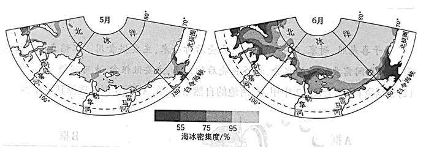

2023年北京市中考地理真题 · 选择题 第21、22、23、24、25题
巴西伊瓜苏国家公园和阿根廷伊瓜苏国家公园内动植物种类丰富，分别被列入《世界遗产名录》。因当地居民启用原本关闭的道路，1999年巴西伊瓜苏国家公园面临从名录中被删除的危险，2001年该道路重新关闭。图为巴西伊瓜苏国家公园手绘图。读图，完成下面小题。


21. 重新关闭穿越国家公园的道路，可以（ ）
①保护动物的迁徙通道②促进巴西发展边境贸易
③减少盗伐与盗猎现象④改善动植物的生存环境
A. ①②③B. ①②④C. ①③④D. ②③④
22. 为保护动植物资源，该国家公园应（ ）
A. 加强科学研究力度，改变植物生长习性B. 健全国际合作机制，畅通跨境生态廊道
C. 扩建周边所有城镇，限制动物活动范围D. 大力开发旅游项目，拓宽经济收入渠道
海冰是极地研究的重要内容。海冰密集度指海冰面积占海域总面积的比例。图为近30年北冰洋部分海域5月、6月平均海冰密集度分布图。读图，完成下面小题。

23. 北极地区的海冰（ ）
A. 是企鹅觅食的保障B. 集中在大陆的边缘
C. 暖季时分布范围广D. 极夜期间冰层坚厚
24. 与5月相比，6月（ ）
A. 叶尼塞河河口海冰密集度增大B. 勒拿河河口海冰的融化量增大
C. 科雷马河河口海冰融化量减小D. 白令海峡北部的海冰没有变化
25. 与图示地区海冰融化有关的是（ ）
①纬度位置②季节③海拔④河流
A. ①②③B. ①②④C. ①③④D. ②③④